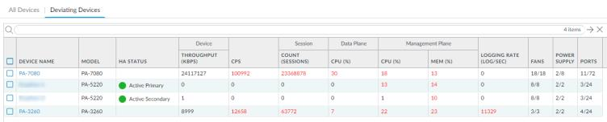

Panorama > Managed Devices > Health > Deviating Devices The Deviating Devices tab displays devices that have any metrics that are deviating from their calculated baseline and displays those deviating metrics in red. A metric health baseline is determined by averaging the health performance for a given metric over seven days plus the standard deviation. Figure 1. Example of a Deviated Metric 
